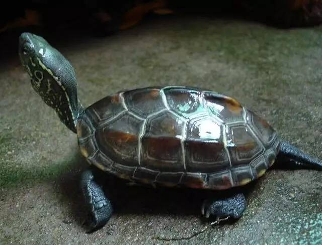

Why Keep Turtles?
Keeping turtles offers numerous joys and benefits. Turtles are among the most long-lived pets, bringing a sense of calm and delight to your life for many years.
Begin Your Turtle Care Journey
Explore our website to learn how to properly care for turtles, from choosing the right species to providing them with a healthy living environment.
